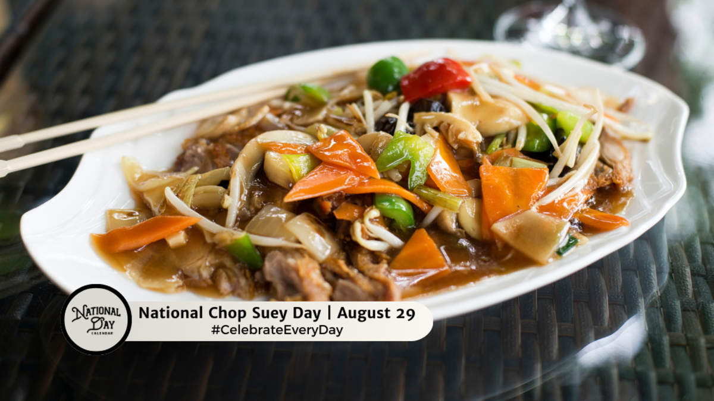

Anhui cuisine, also known as Hui cuisine, has a rich history dating back over 1,000 years to the Song Dynasty. It originated in Huizhou, an ancient area in southern Anhui Province, and its development is closely tied to the Huizhou merchants who introduced it across China.
This cuisine is characterized by its use of wild ingredients like bamboo shoots, mushrooms, and herbs, often sourced from the region's lush hills and rivers. Medicinal herbs are also commonly incorporated, emphasizing health benefits. Cooking techniques such as braising, stewing, and steaming are favored, with frying used less frequently
Stinky Mandarin Fish (臭鳜鱼): A fermented fish dish with a unique aroma.
Li Hongzhang Chop Suey (李鸿章杂烩): A hearty stew named after a Qing dynasty statesman.
Hairy Tofu (毛豆腐): A local specialty with a distinctive texture and flavor.
